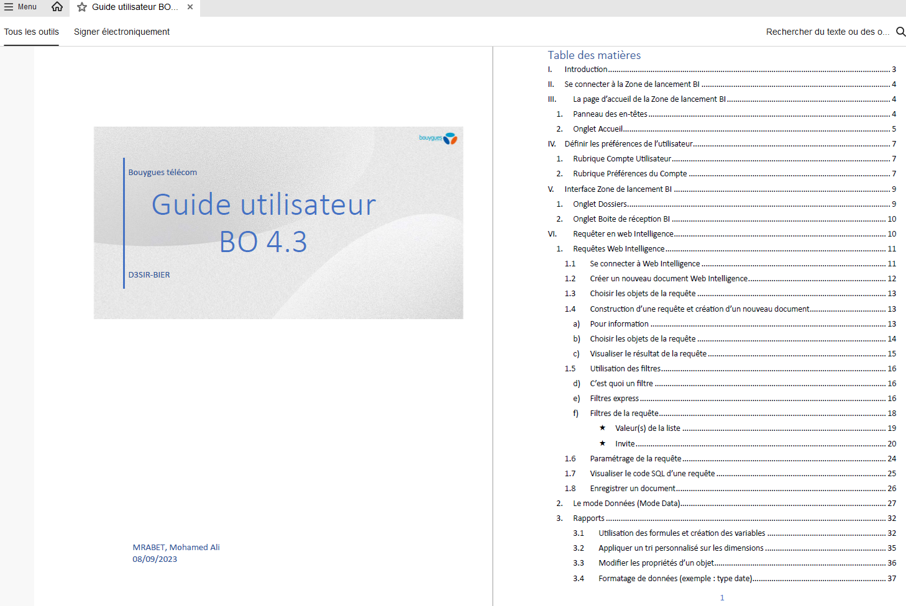
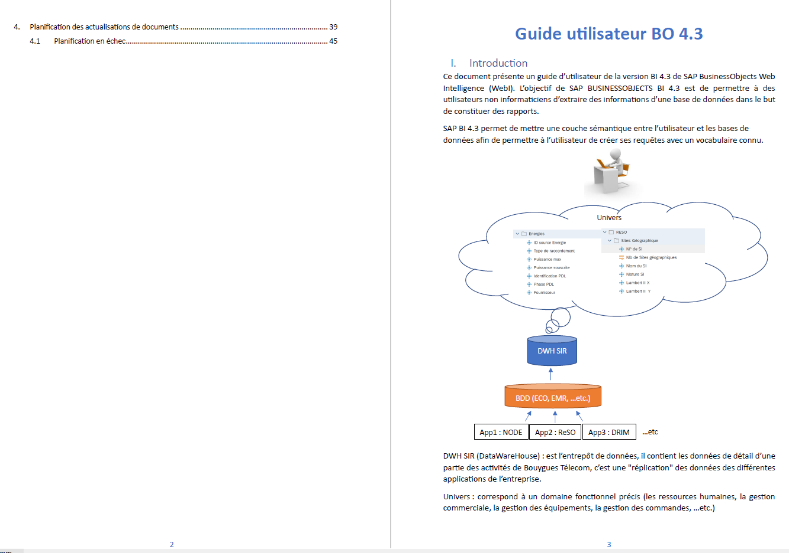

Page de garde
Guide utilisateur BO 4.3, rédigé pour les équipes Bouygues Telecom.
Pilotage complet de la migration de la plateforme SAP BusinessObjects chez Bouygues Telecom : purge des documents personnels via 360 Suite, migration par promotion vers la version 4.3, tests des principales nouvelles fonctionnalités, puis accompagnement des utilisateurs via un guide dédié.
Aperçu de la page de garde et de l'introduction, à titre d'illustration. Le reste du document n'est volontairement pas publié : les autres parties du guide s'appuient sur de vraies données et éléments internes de Bouygues Telecom, couverts par la confidentialité liée à cette mission.

Guide utilisateur BO 4.3, rédigé pour les équipes Bouygues Telecom.

Présentation du contexte SAP BO et de l'architecture de données (extrait non confidentiel).
Présentation réalisée auprès des équipes, hébergée directement ici.
Exemple à remplacer par le vrai fichier vidéo (voir assets/gallery/sap-bo-migration/).